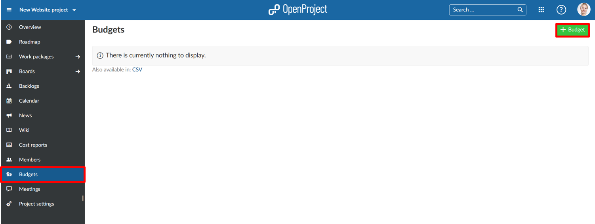
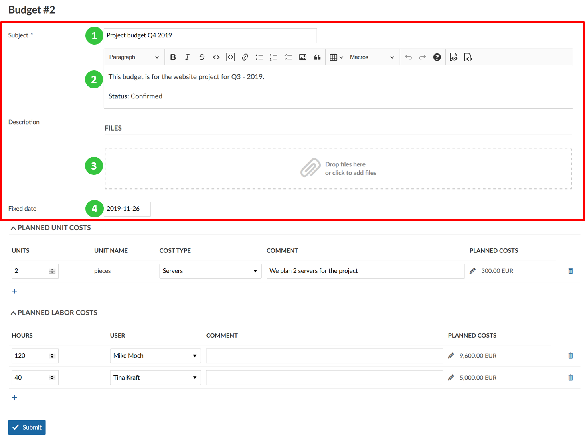
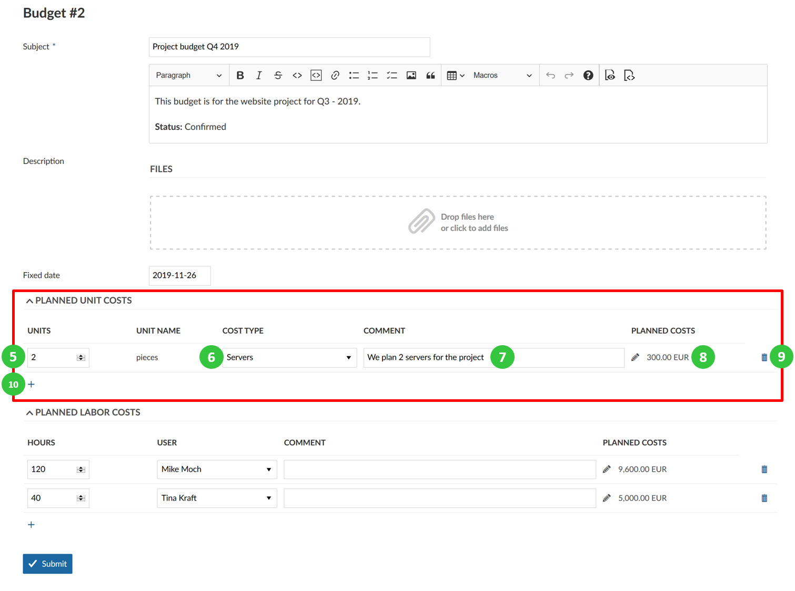
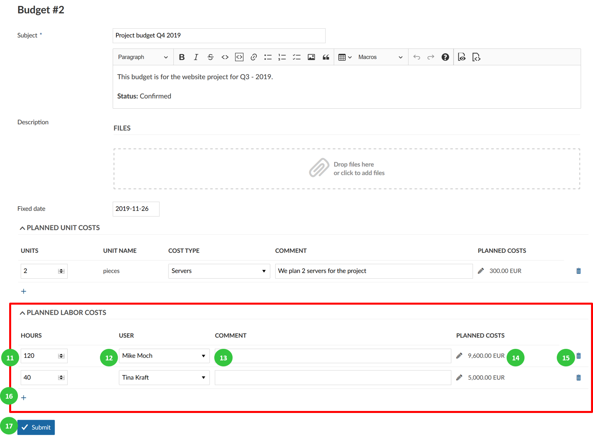
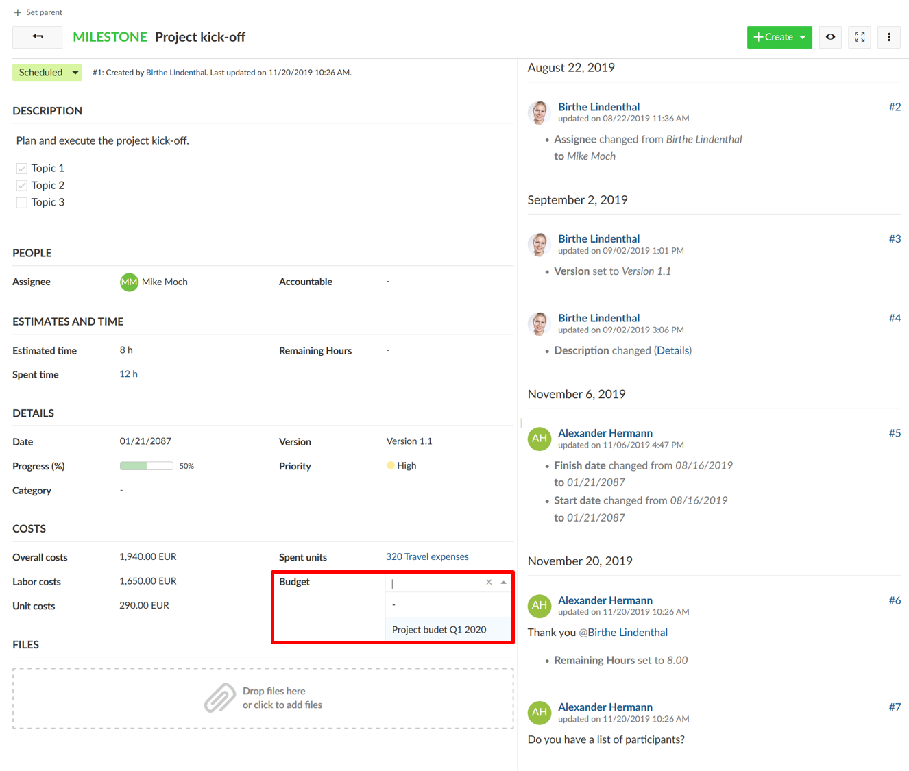
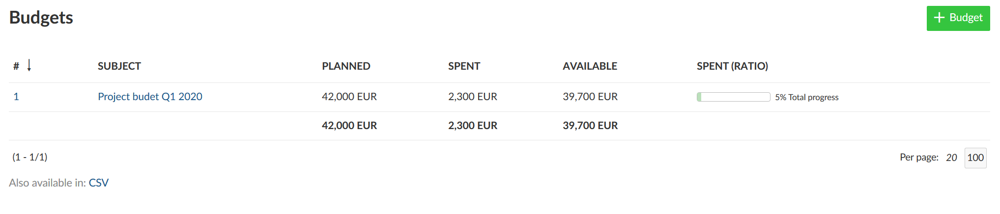
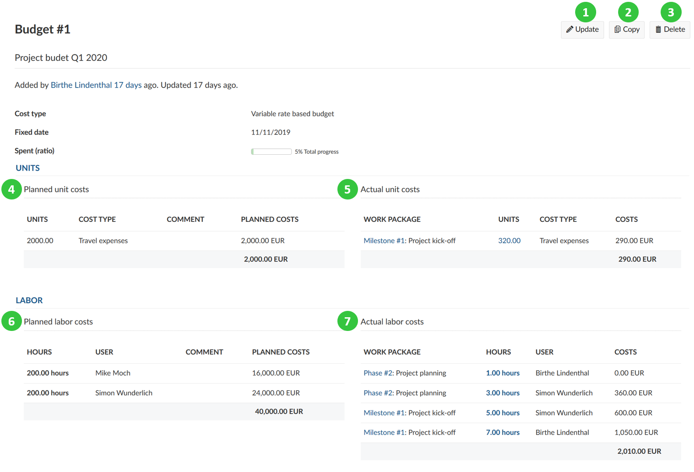

You can create and manage a project budget in IESP PM TOOL to keep track of your available and spent costs in a project.
You can add planned unit costs as well as labor costs for the project.
Then, you will assign work packages to a budgets. If you log time or costs to this work package the costs will booked to this budget and show the percentage spent for a project budget.
| Topic | Content |
|---|---|
| Create a project budget | How to set up a project budget in IESP PM TOOL? |
| Add planned unit costs | How to add planned unit costs to a budget? |
| Add planned labor costs | How to add planned labor costs to a budget? |
| Assign a work package to a budget | How to assign a work package to book time and costs to a project budget? |
| View details and update budget | How to display the details, update, copy or delete a project budget? |
| Frequently asked questions (FAQ) | What are frequent questions regarding budgets? |
In order to create a budget in your project, please activate the Budgets module in the project settings.
To create your first budget in IESP PM TOOL, click the green + Budget button on the top right of the page.

In the detailed view you can enter the details for your project budget, add planned unit costs and planned labor costs.

You can add planned unit costs to a budget in your project. These unit costs first need to be configured in the system’s administration.
Enter the number of units of the cost type to add to your project budgets.
Choose the cost type you would like to plan for your budget from the drop-down list. The unit name will be set automatically according to the configuration of the cost types in your system administration.
Add a comment to specify the unit costs.
The planned costs for this cost type will be calculated automatically based on the configuration of the cost per unit for this cost type. The cost rate will be taken from the fixed date you have configured for your budget. You can click the edit icon (small pen) if you want to manually overwrite the calculated costs for this cost type.
Click the delete icon if you want to drop the planned unit costs.
The + icon will add a new unit cost type for this budget.

You can also add planned labor costs to a budget.

To add a work package to a project budget to book time and costs to a budget, navigate to the respective work package detailed view.
In the Costs section, select the budget which you want to assign this work package to. You will see a list of budgets configured in your project in the drop-down list.
Now, all time and costs booked to this work package will be booked against the corresponding budget.

You can view the details of a budget and make changes to your budget by selecting it from the list of budgets.

Click on the subject to open the details view of the budget.
You will get and overview of planned as well as spent costs and the available costs for your variable rate budget. Also, the total progress of the budget (ratio spent) is displayed. Furthermore the fixed rate is shown from which the costs for labor and unit costs are being calculated.

Budgets are currently limited to a single project. They cannot be shared across multiple projects. This means that you would have to set up a separate budget for the different main and sub projects. You can however use cost reports to analyze the time (and cost) spent across multiple projects. For details, you can take a look at our time and cost reports user guide.